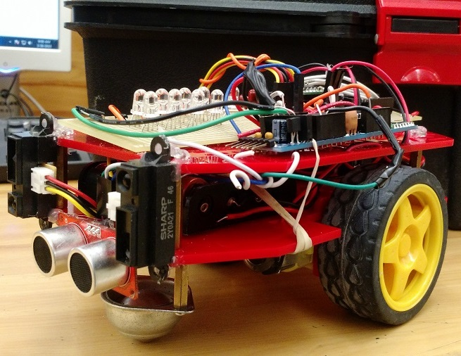
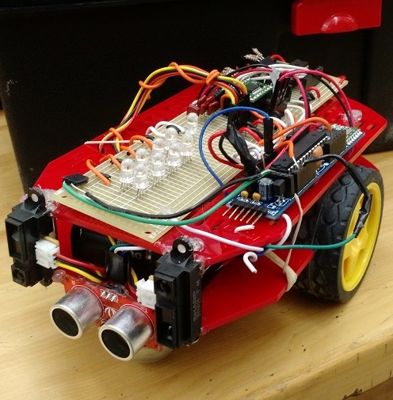
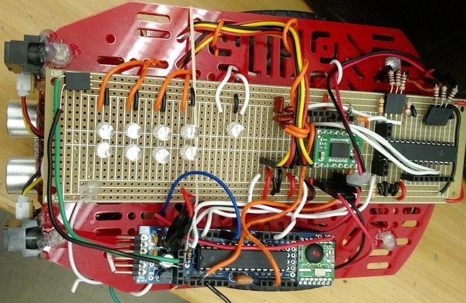
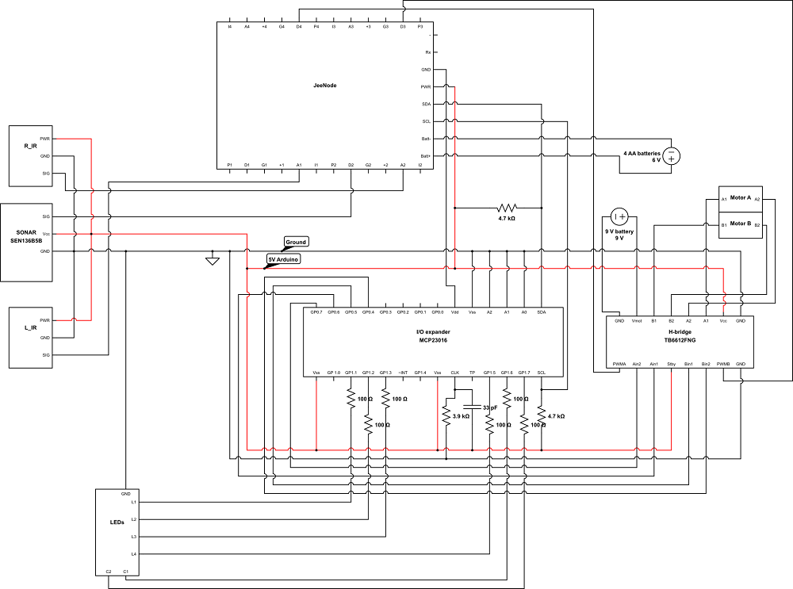
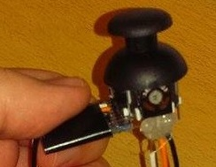
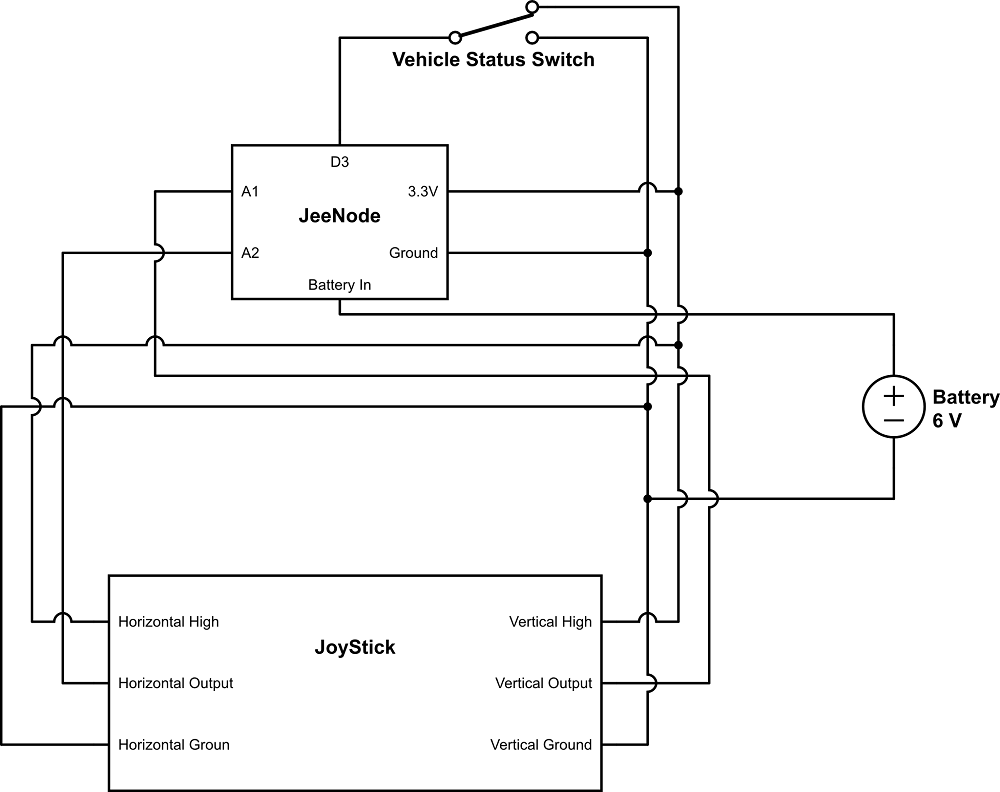

This project was part of the ELEC3907 (Engineering Project) course. In this course, students were
divided (randomly) into groups of approximately six students. Each group had to come up with a project to work on,
since the projects were not assigned. After hours of thinking, the group of six that I was in all agreed to work on
and design a somewhat autonomous vehicle. A vehicle that does some autonomous movement on its own using sensors without
human interference. That's when the design of RoboVoy began.
Project Objectives:
The project objectives are listed below. The initial objectives are the objectives
that were set at the beginning of the course. The added objectives were added later
on in the project when the time for extra features was available.
Initial Objectives
Budget of Under $100
Autonomous Mobility (No Human Interference)
JeeNode Controlled and Operated (Use the provided JeeNode Controller)
Sensor Fusion (Use different sensors to offset any uncertainties)
Added Objectives
Remote Control (Backup when autonomous features fail (if they fail))
Status LEDs (Proximity Indication)
Available Room for Expansion (Other features can easily be implemented)
Parts List:
The parts and components used for this project are listed below.
JeeNode V6 Kit (x2)
2WD Beginner Robot Chassis V2
Pololu Dual DC Motor Driver
SeeedStudio Ultrasonic Range Finder (3cm-400cm)
Sharp IR Range Finder (10cm-80cm)
I/O Expander (MCP23016 - 16Bit Expander - I2C)
USB BUB II (x2, Debugger for JeeNode)
SIRC-01 Sharp GP2 IR Sensor Cable (x2)
Battery Holder (4xAA, x2)
9V Battery Clip
2-Axis Playstation Joystick
On/Off Switch (x2)
RGB LEDs (x9)
Pictures of the finished project can be seen below
...

Front View

Front View

Top View
...
How the vehicle works:
The vehicle's main objective is to follow the vehicles in front. To do this, the ultrasonic range finder was used to determine the distance of the vehicle in front.
If the vehicle in front is (15-90 cm) away, the vehicle would move and get closer, if the vehicle in front is (< 15 cm), the vehicle would not move, if the vehicle in front
is (> 90 cm), the vehicle would not move. This means, that when the vehicle in front is (15-90 cm) away, the main vehicle would move closer and stop once its distance to the front vehicle
is less than 15 cm. If the vehicle in front is moving away, the main vehicle would follow.
To handle the front vehicle's turns, 2 IR sensors were used on either sides of the front of the main vehicle. The readings from the two IRs is used to compared which
side of the front vehicle is closer to the main vehicle. This means, if the front vehicle is turning left, the left IR would have a higher reading since it is closer to the front vehicle
than the right IR, the opposite is true.
The H-Bridge (Motor Driver) is used to power the two motors that require higher voltage than that used by the JeeNode. The I/O expander is used to provide extra Digital General Purpose Input Output
ports that are needed by the H-Bridge and the LEDs.
All the vehicle's autonomous calculations and decisions are done via software, the software for the project was custom made by myself (RF sending and receiving was done by another member of the team). The software can be found HERE. A block diagram of the vehicle,
a circuit diagram and a software block diagram can be seen below.
...
System Level Diagram

Circuit Level Diagram
Software Block Diagram
...
Remote
The remote was an added feature that is used as a backup if the autonomous features of the vehicle fail.
The remote has 3 components, a JeeNode which does the readings, calculations and the transmission, a 2-Axis joystick which is used for movement and turning, and a switch. The switch is used to
indicate to the vehicle whether it should be operated autonomously or using remote (ON: Remote, OFF: Autonomous). The joystick's vertical axis is used for movement (forward, reverse), and the horizontal axis
is used for turning.
Communication between the remote and the vehicle is done using the RF12 modules on the two JeeNodes. Thanks to Karim H. for writing the RF software to transmit the data from the remote to the vehicle.
...

2-Axis Joystick

Circuit Level Diagram
Software Block Diagram
...
Video
The video below shows the vehicle in action.
"Thank you for visiting my website." Maytham Sabbagh